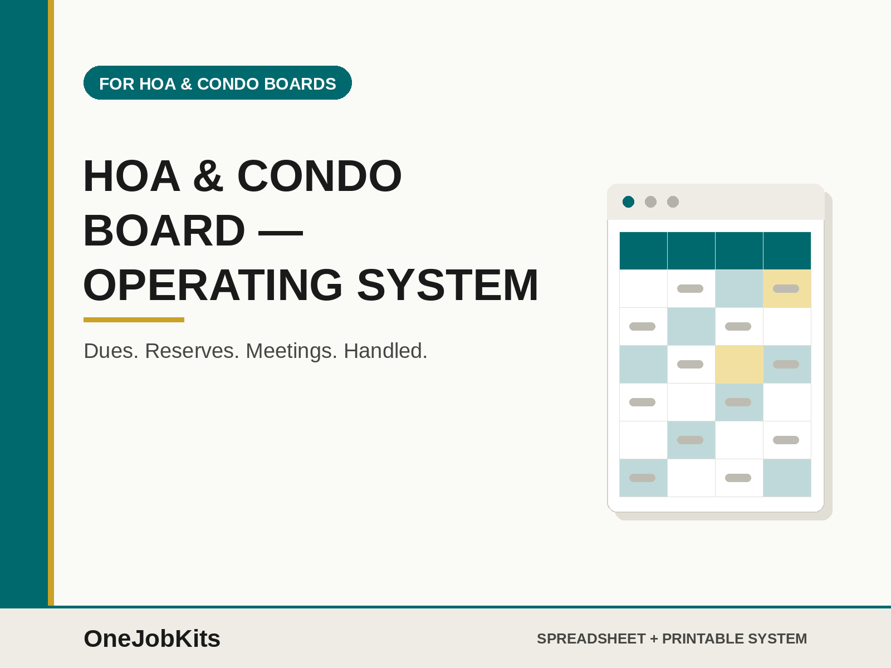

OneJobKits · Kit #12
HOA / Condo Board Operating System — HOA board templates

Nobody searches for HOA board templates because they ran for the board dreaming about spreadsheets. But then the election ends, the previous treasurer hands over a shoebox and a login, and a volunteer is suddenly running a small government: dues, delinquencies, reserves, violations, vendors, elections.
This page gives a new board its bearings free: the First-90-Days Checklist. Below it is the operating system for the whole job — an 11-tab workbook that runs dues, aging, budget, reserves and vendors, the letter and meeting packs that carry the paperwork, and the handover checklist that ends the shoebox era. It is built for self-managed associations of roughly 20–200 units with no management company. These are organisational templates only — not legal advice; your CC&Rs and bylaws outrank them wherever they differ.
Free download — start with the First-90-Days Checklist
The First-90-Days Checklist is a fillable PDF (35 fields): the records to collect, the accounts to secure and the first meetings to run in a new board's first 90 days. The Gumroad free download also includes the Dues Tracker Mini sheet, so the money tracking can start on day one.
Download the free First-90-Days Checklist (PDF)Get it (with the Dues Tracker Mini) on Gumroad
What the checklist does not do: it orients a new board; it does not run the association. The full kit below is the year-round system — every unit's dues and aging, the budget against actuals, reserves kept visibly separate, violations worked as a sequence, vendors tracked before renewals ambush you, and meetings and elections run from templates instead of memory.
What's inside the full kit
- Workbook (spreadsheet, 11 tabs) — START HERE with the association setup block, so every sheet carries the same facts · Unit Roster — 200 units with owner contacts, tenants, emergency contacts and notes · Dues Ledger — 1,000 rows of charges and payments with each unit's balance calculated · Delinquency Aging — FIFO buckets (current · 31–60 · 61–90 · 90+) plus the board summary · Annual Budget Builder — line items roll up to the per-unit-per-month assessment check · Actuals vs Budget — variance by line, month and year · Reserve Tracker — component funding targets and percent funded · Violation Log — 100 cases from courtesy to hearing to resolution · ARC Tracker — 100 architectural requests with decision dates · Vendor & Contract Log — renewal alerts at 90 and 60 days, insurance-certificate alerts at 30 · Meeting & Election Tracker — the annual cycle with an automatic quorum check
- Worked example file — the workbook filled by a fictional 24-unit association (shown below), with delinquency in every aging bucket
- Violation Letters (Word + fillable PDF, 56 fields) — the 4-step sequence: Courtesy Notice → Formal Violation Letter (rule citation, cure deadline) → Hearing Notice → Resolution Letter, each with the attorney-review footer
- Meeting & Election Pack (Word + fillable PDF, 94 fields) — agenda and minutes templates, proxy and ballot forms, and the annual-meeting set: notice, agenda and election count sheets
- ARC Pack (Word + fillable PDF, 60 fields) — request form, review tracker fields and approval/denial letter templates
- Board Handover Checklist (fillable PDF, 44 fields) — how an outgoing board passes records, accounts and open issues to the incoming board
- Setup Guide (PDF, 10 pages) — file map, workbook setup, the monthly close and annual cycle, privacy and records notes, and version control
- Condo tier ($199) adds: the Condo workbook — everything above plus a Unit-Owner Ledger View tab and a Condo Insurance Tracker — and the Condo Meeting Module (PDF, 53 fields)
A filled example — so you can see the finished thing
The kit's own worked example belongs to Maple Grove HOA, a fictional association. The community is invented; the setup below is the example file's own:
| From the example file | What the system shows |
|---|---|
| The association | 24 units · $185 per unit per month — $53,280 a year in assessments at full collection, the number the Annual Budget Builder checks itself against |
| Dues Ledger → Aging | Six months (Jan–Jun 2026) of charges and payments roll into the aging view with units sitting in every bucket — current, 31–60, 61–90 and 90+ — so the board summary shows the collection problem's true shape at a glance |
| Actuals vs Budget | Half a year of spending against the adopted budget, variance by line — the mid-year conversation happens from numbers, not impressions |
| Vendors | Contracts logged with renewal and insurance dates, so the alerts fire at 90/60/30 days instead of the week the policy lapses |
That is the operating system working as intended: one setup block feeding every sheet, money tracked per unit, and a board that can answer "where do we stand?" in one meeting.
Who it is for
Presidents, treasurers and secretaries of self-managed HOAs and small condo associations (roughly 20–200 units) with no management company — volunteers who inherited the job and need the records, letters and meetings to run like a system instead of a shoebox.
Who it is not for
Professionally managed associations (your manager has systems), and anyone wanting state-specific legal documents or legal advice. HOA law varies by state; notice periods, lien rules and meeting requirements differ — have your association's attorney review any letter or process before you rely on it.
Questions buyers ask
- We are a brand-new board — where do we start?
- With orientation before operations. The free First-90-Days Checklist on this page covers the records to collect, accounts to secure and first meetings to run in a new board's first 90 days. Inside the full kit, the Board Handover Checklist structures the pass from the outgoing board — records, accounts, contracts and open issues — and the setup guide puts the workbook in place: association details, unit roster, opening balances, then the monthly routine.
- How does the delinquency aging actually work?
- Payments are applied oldest-charge-first (FIFO) against each unit's charges in the Dues Ledger. The Delinquency Aging tab then shows every balance in buckets — current, 31–60, 61–90, 90+ days — with a board summary of units past due and total past due, so the board sees the collection picture in one view instead of unit by unit.
- Are the violation letters legal for my state?
- They are templates, not legal documents for any specific state. The pack follows the standard escalating sequence — courtesy notice, formal violation letter, hearing notice, resolution letter — with fields for dates, rule citations and evidence, and every letter carries the footer: template only, have your association's attorney review before relying on it. Association law is state-specific, notice periods vary, and your CC&Rs and bylaws outrank any template wherever they differ.
- How much should we hold in reserves?
- The Reserve Tracker answers the arithmetic, not the policy: you enter each component (roof, paving, paint…) with its replacement cost and remaining life, and the sheet computes the full-funding target and your percent funded. How fast you close the gap is a board decision — usually with a reserve study and your governing documents in hand. What the kit guarantees is that reserve money stays visibly separate from operating money in the records.
- We're a condo, not an HOA — what's different?
- The Condo tier adds the pieces condo boards specifically need: a Unit-Owner Ledger View tab (a per-unit statement you can show an owner), a Condo Insurance Tracker (policies, renewals and certificate tracking), and the Condo Meeting Module — condo-flavoured meeting and election paperwork. Everything in the standard system is included.
- How do elections and quorum work in the kit?
- The Meeting & Election Tracker holds the annual cycle — meeting dates, notice-by dates, director terms expiring — and checks quorum automatically: units represented in person or by proxy against the quorum threshold you set from your bylaws. The Meeting & Election Pack carries the paper: agenda and minutes templates, proxy and ballot forms, and the annual-meeting set (notice, agenda, count sheets).
- What does the free checklist cover, and what does the full kit add?
- The free download is the fillable First-90-Days Checklist (35 fields) plus the dues-tracker mini sheet in the Gumroad free file — orientation for a new board. The full kit runs the association all year: dues and delinquency, budget and reserves, violations and ARC, vendors, meetings and elections, and the handover that makes the next board's first 90 days easier than yours.
Prices
Standard: $149 · Condo: $199 — one-time payment, digital download. No subscription; the files are yours.
Can't find the kit you need?
We build it. Ask us — first asker gets it at half the shelf price. Tell us the job at onejobkits.com and we will build the kit for it.
Related kits
Please know: this is an organisational template system only — not legal, financial, accounting or tax advice. Your association's CC&Rs and bylaws outrank these templates wherever they differ, and association law varies by state; have your attorney review any letter or process before you rely on it. All example data is fictional (Maple Grove HOA is invented, and the example file says so).